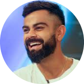

|  | Virat Prem KohliFounder of Virat Kohli Foundation Captain of the Indian men's cricket team. |
Virat Kohli got the chance to captain in an ICC tournament for the first time in the 2017 ICC Champions Trophy. In the semi-final against Bangladesh, Kohli scored 96*, thus becoming the fastest batsman, in terms of innings, to reach 8,000 runs in ODIs in 175 innings. India reached the final, but lost to Pakistan by 180 runs. In the third over of Indian innings, Virat Kohli was dropped in the slips for just five runs but caught the next ball by Shadab Khan at point on the bowling of Mohammad Amir. He was also named as part of the 'Team of the Tournament' at the 2017 Champions Trophy by the ICC.
In April 2019, he was named the captain of India's squad for the 2019 Cricket World Cup. On 16 June 2019, in India's match against Pakistan, Kohli became the fastest batsman, in terms of innings, to score 11,000 runs in ODI cricket. He reached the landmark in his 222nd innings.Eleven days later, in the match against the West Indies, Kohli became the fastest cricketer, in terms of innings, to score 20,000 runs in international cricket, doing so in his 417th innings.[280] Kohli scored five consecutive fifty plus score in the tournament. India lost the semi-final against New Zealand, in which Kohli was out for just a run.
In June 2021, India lost the 2021 ICC World Test Championship Final to New Zealand. This was Kohli's third defeat as captain in knockouts and finals of ICC tournaments.Virat Kohli scored 44 and 13 runs in the 1st and 2nd innings respectively. He was dismissed in both the innings by Kyle Jamieson
n September 2021, Kohli was named as the captain of India's squad for the 2021 ICC Men's T20 World Cup.India could not make it through the semi-finals, which was the first time in the past 9 years
In October 2019, Kohli captained India for the 50th time in Test cricket, in the second Test against South Africa.In the first innings of the match, Kohli scored an unbeaten 254 runs, passing 7,000 runs in Tests in the process, and became the first batsman for India to score seven double centuries in Test cricket. In November 2019, during the day/night Test match against Bangladesh, Kohli became the fastest captain to score 5,000 runs in Test cricket, doing so in his 86th innings.In the same match, he also scored his 70th century in international cricket
India toured to New Zealand from January to March 2020 to play 5-match T20 series along with a 3 and 2-match ODI and test series respectively. During the tour, he only managed 218 across formats in 12 innings at an average of 19.81 with one half-century during first ODI. This was his lowest aggregate of runs in a tour where he played in all formats. India managed to win the T20I series 5-0, but during the ODI and Test leg of the tour they lost by 3-0 and 2-0 respectively. The Indian team travelled to Australia in November 2020, touring until January 2021. During the ODI Series, Kohli managed to score two half-centuries in three innings with a aggregate of 173 runs at an average of 57.67. The second match against Australia was Kohli's 250th ODI match. He was the highest run scorer in the series for India, with 134 runs, at an average of 44.37. During the first test of the tour played as Day/night match at Adelaide, Kohli scored 74 before being run out,making 4 runs in the next innings.After the first Test, Kohli left the tour on paternity leave as he was expecting the birth of his first child. In November 2020, Kohli was nominated for the Sir Garfield Sobers Award for ICC Male Cricketer of the Decade, as well as Test, ODI and T20I player of the decade. He won the awards for Male cricketer of the decade and ODI cricketer of the decade. The English cricket team's tour of India in 2020-2021 began with a long 4-match Test series. Kohli made 172 runs across 4 Test matches, at an average of 28.66 with 2 half-centuries and 2 ducks. During the second test at Chepauk, he scored 62 on a pitch which English batting great Geoffrey Boycott described as a template to bat and score runs on a turning pitch.In 2020, Kohli scored a combined (Test, T20I and ODI) total of 842 runs from 24 innings, made a high score of 89 and at an average of 36.60. Kohli was dismissed for a duck again in the 1st T20I of a 5-match series. However, he found his form in the latter part of the series and ended the series as the highest run-scorer from both sides with 231 runs to his name and 3 half-centuries at an average of 115.50 as India clinched the series 3-2. Kohli was adjudged as the Man of the Series for his performances. During the second T20I, Kohli became the first ever batsman to complete 3,000 runs in the format. In the 3-match ODI series, Kohli scored 129 runs in 3 innings with 2 half-centuries at a moderate average of 43.00 as India won the series 2-1. During the 2nd ODI, Kohli became the second batsman after Ricky Ponting to score 10,000 runs batting at number 3. The Indian cricket team toured England in 2021 for a 5-match test series. During the 1st innings of the first test, Kohli was dismissed for a golden duck by James Anderson.Kohli managed to score 2 fifties in the next 6 innings he played.During the fifth test in 2022, where India was leading the series 2-1, Kohli scored a total of 31 runs and finished the series with 249 runs, a high score of 55 and an average of 27.66 England went on to win the match and draw the series 2-2. Later in 2021 and early 2022, the Indian cricket team toured South Africa for a 3-match test series and a 3-match ODI series. Kohli managed to score 161 runs in the 4 innings of test series he played, averaging at 40.25. He could not play 2nd test of the series due to an injury. India lost the series by 2-1, despite winning the first test. In the ODI series, Kohli scored 116 runs in 3 innings, including two fifties, with an average of 38.66.South Africa swept the ODI series against India, winning 3-0. The West Indian cricket team toured India in February 2022, for a 3-match ODI series and a 3-match T20I series. During the ODI series, Kohli scored his 5,000th run in India in ODIs. He scored a total of 26 runs from 3 innings, at a poor average of 8.66.Kohli scored a total of 69 runs in T20I series, at an average of 34.50, with the help of a half-century. The Sri Lankan cricket team toured India in February & March 2022, for a 3-match T20I series and 2-match test series. Kohli was rested for the T20I series.Kohli amassed a total of 81 runs in 3 innings, in the 2-match test series, at an average of 27.0.
| Category | Info |
|---|---|
| Born | November 05, 1988, Delhi |
| Batting Style | Right hand Bat |
| Bowling Style | Right arm Medium |
| Playing Role | Top order Batter |
| National Side | India |
| Nickname | Cheeku, Run Machine |
| Teams Played | India, Asia XI, India A, India Blue, Indian Board Presidents XI, India Red, North Zone, Rest of India, Royal Challengers Bangalore, India Under-19, Delhi, Indians |
|
|